어떤 사진에서도 버티는 화면
영상은 일부러 어설프게 만든 유기농 딸기 상품 페이지에서 시작해요. 시청자에게 먼저 실수를 몇 개 찾을 수 있는지 세어 보라고 하고, 발표자는 큰 실수만 15개를 꼽아요. 아래 화면에서 빨간 번호 1~15가 각 실수의 자리예요. 꼭대기 사진 위의 아이콘이 2번, 가격과 수량 줄에 11~14번이 몰려 있어요.
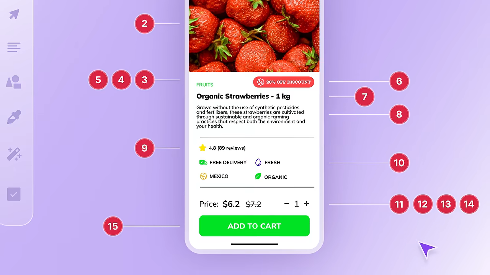
15개를 한 줄로 늘어놓으면 외우기 어려워요. 그래서 이 문서는 고치는 순서대로 다섯 묶음으로 나눴어요. 사진이 어떤 상품에서든 버티게 하는 것, 정렬·색·글꼴 같은 바탕 규칙, 글자와 신뢰 정보, 덜어내기, 그리고 사는 흐름이에요.
실수 1 — 사진에 묻히는 아이콘
뒤로 가기와 더보기 아이콘이 상품 사진 위에 그대로 얹혀 있어요. 딸기 사진이 어두워서 지금은 보이지만, 밝은 사진으로 바꾸면 이야기가 달라져요. 아래 화면에서 하얀 배경의 파인애플 위에 놓인 왼쪽 위 화살표와 오른쪽 위 점 세 개가 거의 사라졌어요.
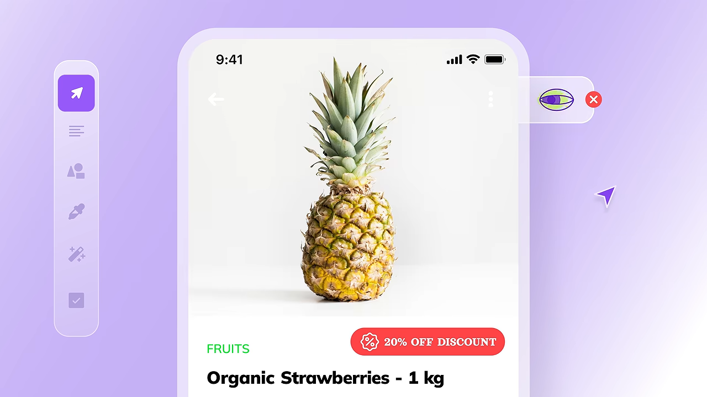
고친 방법은 단순해요. 아이콘 뒤에 은은한 원형 배경을 깔고, 아이콘 대비를 충분히 주고, 얇은 테두리를 둘러요. 같은 파인애플 사진인데 이번에는 흰 원 안의 화살표와 점 세 개가 또렷해요. 발표자는 이걸 '화면 하나를 디자인하는 것'과 '실제 제품 시스템을 디자인하는 것'의 차이라고 말해요.
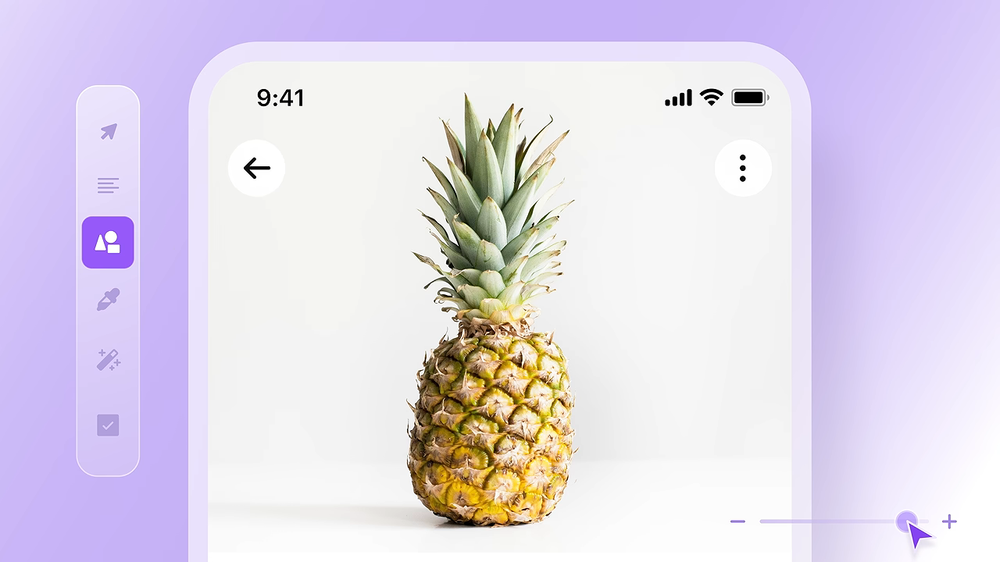
실수 2 — 상품 사진 고르기
영상은 후보 사진 A~F 여섯 장을 보여 주고 고르게 해요. 정답은 F예요. 각 사진이 왜 탈락했는지가 이 구간의 핵심이에요.
| 후보 | 사진 | 탈락하거나 뽑힌 이유 |
|---|---|---|
| A | 딸기가 화면을 꽉 채움 | 너무 복잡해서 포컬 포인트가 없어요 |
| B | 두 손에 담은 딸기 | 시선이 상품이 아니라 손에 가요. 상품 사진보다 라이프스타일 사진에 가까워요 |
| C | 딸기 한 알 | 무게로 파는 상품인데 한 알만 보여서 머릿속 그림과 어긋나요 |
| D | 분홍 배경의 딸기 | 배경이 인위적이에요. 신선한 유기농 식품은 자연스러워 보여야 해요 |
| E | 바구니에 담긴 딸기, 짚과 나무 배경 | 사진만 보면 좋아요. 그런데 다른 상품 옆에 놓이면 배경과 조명이 제각각이라 카탈로그가 어수선해져요 |
| F | 바구니 딸기, 깨끗한 흰 배경 | 자연스러움은 살리고 배경은 통일할 수 있어요. 카탈로그 전체가 같은 규칙을 따라요 |
E가 탈락하는 장면이 가장 배울 만해요. 아래 화면은 E 스타일 사진을 상품 목록에 넣은 모습이에요. 바구니 딸기, 손에 든 바나나, 물 튀는 사과, 나무판 위 과일이 섞여서 한 가게의 상품처럼 보이지 않아요. 오른쪽 막대의 표정도 찡그린 얼굴이에요.
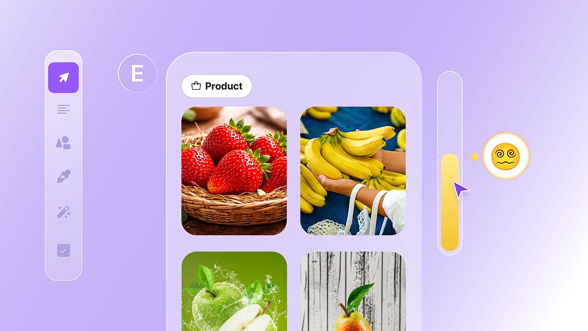
F 규칙으로 찍은 목록은 달라요. 모든 과일이 같은 바구니와 흰 배경 위에 있어서 상품만 눈에 들어와요. 영상은 이 장면 바로 앞에 '좋은 상품 사진은 쇼핑 여정 전체를 받쳐 준다'는 문구를 붙여요.
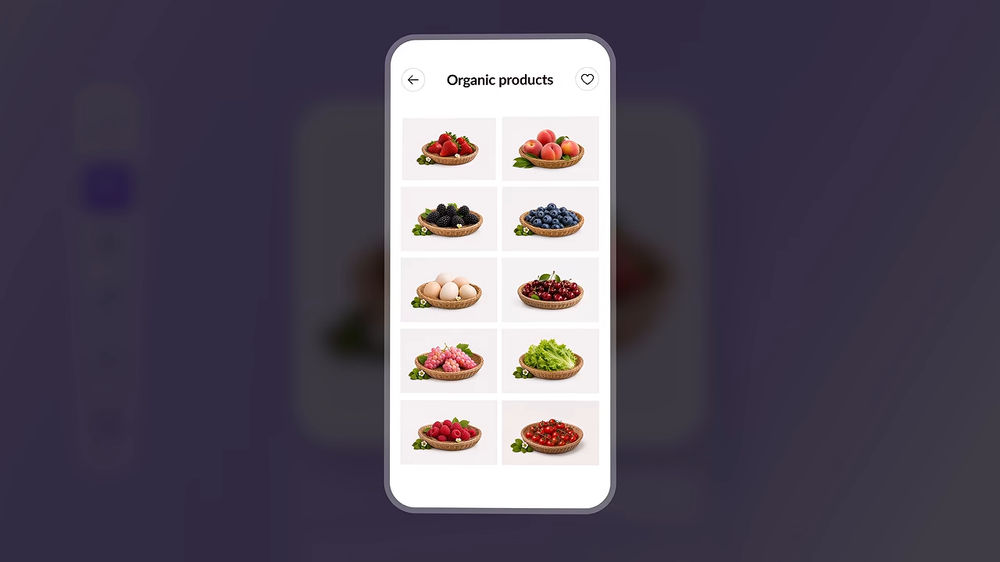
정렬·색·글꼴 바로잡기
사진 다음은 화면 전체에 깔리는 규칙이에요. 정렬, 색, 글꼴은 사용자가 하나하나 의식하지 않지만, 어긋나면 화면 전체가 덜 믿음직하게 느껴져요.
실수 3 — 정렬
발표자는 글자, 아이콘, 가격, 버튼, 섹션이 모두 하나의 레이아웃 그리드를 따라야 한다고 말해요. 아래는 영상이 기준으로 보여 준 뼈대예요. 양옆의 점선이 좌우 여백(Side margins)이고, 카테고리 라벨부터 장바구니 버튼까지 모두 그 안쪽 같은 선에서 시작해요. 노란 'Component Spacing' 표시는 요소 사이 간격도 규칙을 따라야 한다는 뜻이에요.
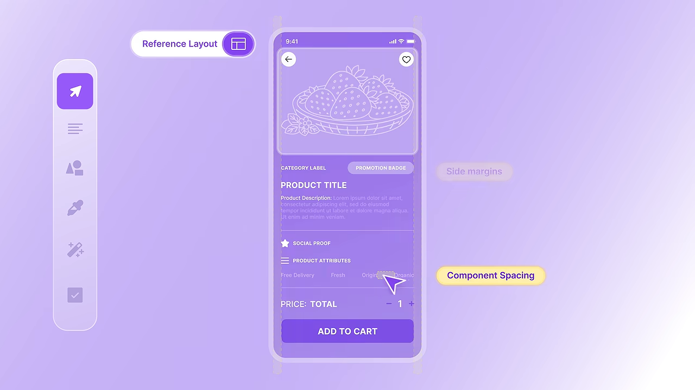
원래 화면을 이 기준에 대 보면 어긋난 곳이 보여요. 오른쪽 세로 점선이 여백의 끝인데, 빨간 원 안의 설명문 끝 글자 'and'가 그 선 밖으로 삐져나와 있어요. 할인 배지도 같은 선을 넘어요.
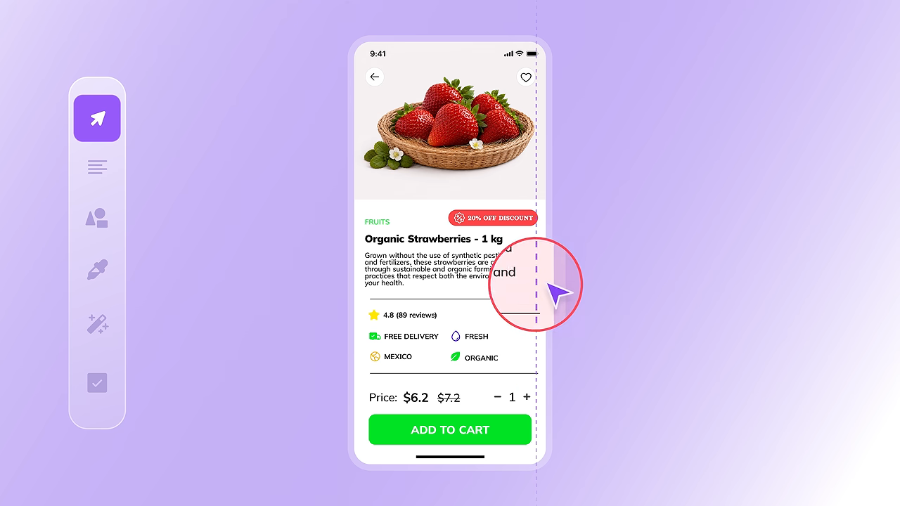
고치는 법은 여백을 하나로 정하는 거예요. 예를 들어 내용이 왼쪽에서 24픽셀 떨어져 시작하면 화면 전체가 그 구조를 따르게 해요. 모든 요소가 같은 그리드에 붙으면 화면이 균형 있고 의도한 것처럼 보여요.
실수 4 — 색
원래 화면은 색이 너무 밝고 채도가 높아요. 형광 초록 버튼과 아이콘이 엉뚱한 곳을 강조해서 두 가지 문제가 생겨요. 글을 읽기 어려워지고, 여러 요소가 한꺼번에 시선을 끌어 시각적 위계가 약해져요. 신선한 유기농 식품이니 색은 상품을 받쳐 줘야지 덮어 버리면 안 돼요.
아래 화면에서 버튼과 라벨이 형광 초록에서 짙은 올리브 초록으로 바뀌었어요. 오른쪽 팔레트(빨강, 초록, 노랑, 파랑, 자주)는 새로 정한 부드러운 색이고, 그 아래 'sets the mood' 말풍선이 색의 첫 번째 역할이에요. 영상은 이어서 'supports product', 'color guides attention'을 차례로 붙여요.
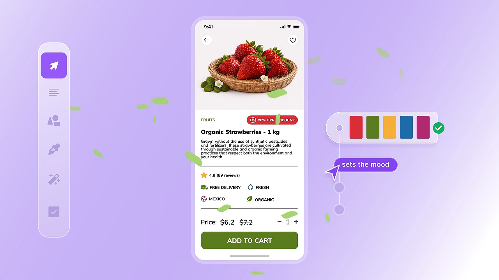
실수 5 — 글꼴
원래 화면은 글꼴 스타일이 너무 많아요. 영상이 띄운 글꼴 목록에 Inter, Joanna, Mulish, OfficinaSerif 같은 이름이 보이고, 할인 배지에는 장식적인 Orelega One이 쓰였어요. 발표자는 상품 페이지에 글꼴이 많을 필요가 없다고 말해요.
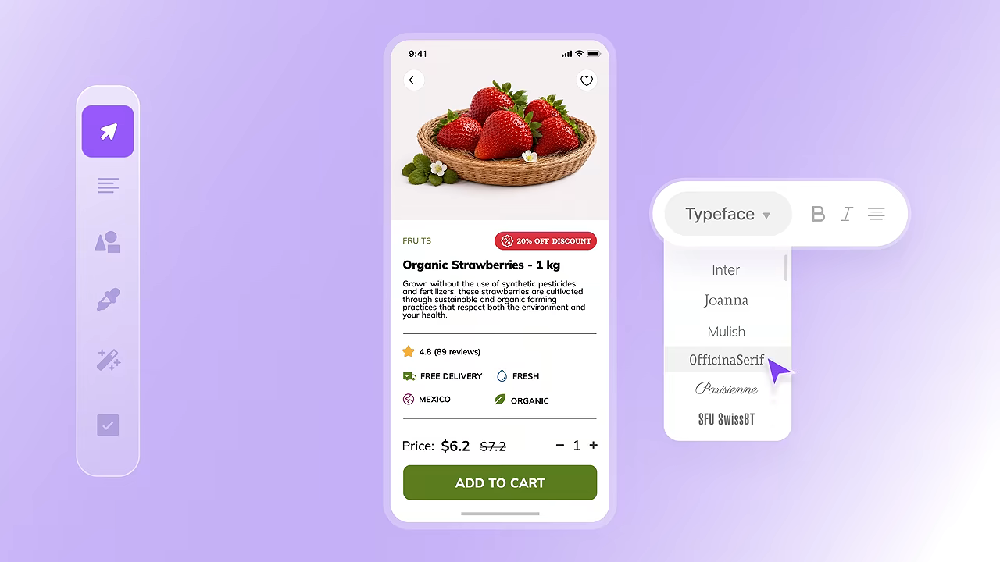
대부분은 튼튼한 폰트 패밀리 하나면 충분해요. 위계는 글꼴을 바꾸지 않고 크기, 굵기, 색, 행간으로 만들어요. 영상은 글꼴을 더 깔끔한 Lato 하나로 통일해요.
글자마다 맡은 역할, 리뷰의 자리
바탕을 맞췄으니 이제 글자 하나하나를 봐요. 라벨, 제목, 본문, 리뷰는 저마다 맡은 역할이 있고, 역할보다 크게 떠들면 다른 정보가 묻혀요.
실수 6 — 라벨과 할인 배지
아래 화면에서 왼쪽 위 'FRUITS' 라벨에 세로 줄무늬가 그어져 있어요. 글자 사이가 너무 붙어 있다는 표시예요. 작은 대문자 라벨은 자간을 조금 넓히면 숨통이 트여요. 오른쪽의 빨간 '20% OFF DISCOUNT' 배지가 더 큰 문제예요. 'off'와 'discount'가 같은 뜻을 두 번 말하고 아이콘까지 붙어 있어요.
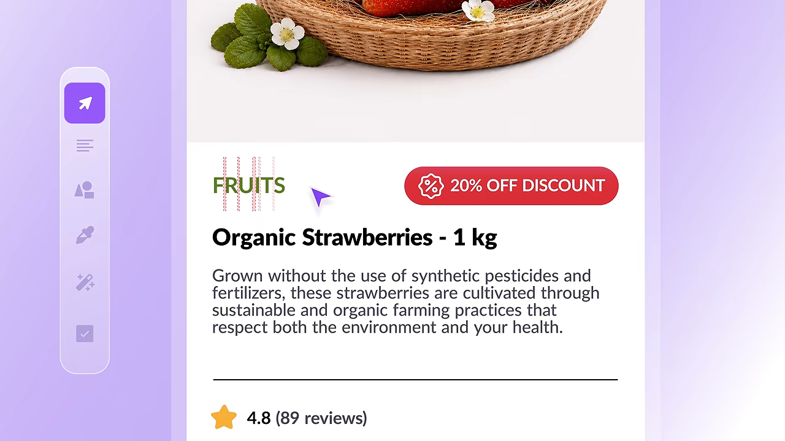
배지는 한눈에 읽혀야 해요. '20% off'만으로도 할인은 충분히 전해지고, 상품에서 시선을 빼앗지 않아요.
실수 7 — 제목
제목은 사용자가 무엇을 사는지 알려 주는 가장 중요한 정보예요. 아래 화면에서 줄여 놓은 '20% off' 배지가 오른쪽에 있고, 빨간 'Competing visual weight' 표시가 제목과 배지를 잇고 있어요. 둘이 시선을 두고 다툰다는 뜻이에요. 제목은 굵지만 크기와 굵기가 맞지 않아 위계가 어색해요.
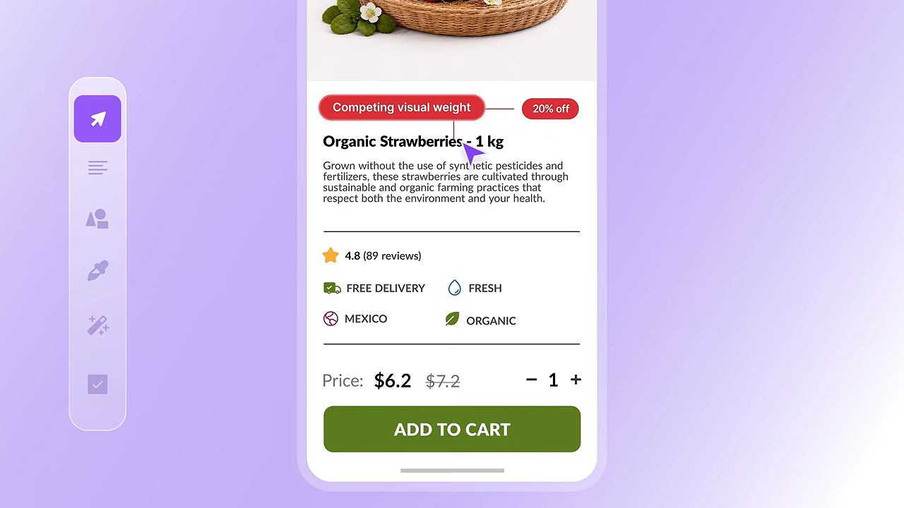
그래서 크기와 굵기를 조정해서 레이아웃 안에서 자연스럽게 서게 해요. 읽기 쉽고, 훑기 쉽고, 나머지 요소와 균형이 맞아요.
실수 8 — 본문
설명문은 줄 사이가 너무 좁아요. 아래 화면에서 빨갛게 칠한 본문 위에 'look at me!' 말풍선이 두 개 떠 있어요. 본문이 시선을 달라고 떼쓰고 있다는 농담이에요. 본문은 주목을 끌 게 아니라 상품을 편하게 이해하게 도와야 해요.
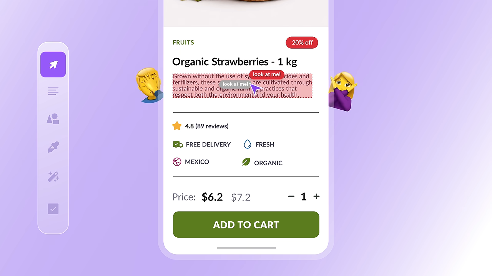
고친 방법은 두 가지예요. 행간을 늘리고, 본문 글자의 대비를 살짝 낮춰요. 발표자가 남기는 규칙은 이거예요.
Headlines attract attention, paragraphs support understanding.
제목은 시선을 끌고, 본문은 이해를 도와요.
— 영상 06:43
실수 9 — 리뷰 위치
발표자는 여기서부터 'UX 사고'가 더 깊어진다고 말해요. 원래 평점은 제목에서 멀리, 설명문과 구분선 아래에 있었어요. 리뷰는 전자상거래에서 가장 강한 신뢰 신호라서 상품 이름을 볼 때 함께 보여야 해요. 사용자가 품는 질문은 '이게 뭐지, 믿어도 되나'예요.
아래 화면은 별 다섯 개와 '4.8 (89 reviews)'를 제목 바로 아래로 옮긴 결과예요. 보라색 말풍선 세 개가 붙어 있어요. 제목에는 'What the product is', 평점에는 'How it's rated', 리뷰 수에는 'User trust'예요.

이 화면에서 설명문 문장도 바뀌었어요. 처음엔 '합성 농약과 비료 없이 재배했다'는 딱딱한 문장이었는데, 지금은 'Grown without pesky synthetic pesticides… packed with natural nutrients and a delicious taste'처럼 짧고 부드러워졌어요. 영상이 따로 짚지는 않지만 화면에서 확인할 수 있어요. 발표자는 이 대목을 이렇게 정리해요. 좋은 UI(User Interface)는 요소를 늘어놓는 게 아니라 사용자가 가장 필요로 하는 자리에 정보를 놓는 일이에요.
덜어내서 차분하게
이 묶음의 실수 네 개는 공통점이 있어요. 무언가를 더해서가 아니라 덜어내서 고쳐요. 색을 줄이고, 선을 연하게 하고, 간격을 좁히고, 라벨을 지워요.
실수 10 — 특징 아이콘
배송, 신선도, 원산지, 유기농을 알려 주는 아이콘 줄은 정보로는 쓸모 있어요. 문제는 생김새예요. 아래 화면의 빨간 'Inconsistent styles' 표시가 짚듯이, 색이 제각각이고 채운 아이콘과 선만 있는 아이콘이 섞여 있어요. 어떤 건 무겁고 어떤 건 가벼워요.

그래서 색을 하나로 줄이고, 선 굵기와 스타일을 맞추고, 간격을 좁혀요. 아래 화면에서 Organic, Fresh, Free delivery, Mexico 네 아이콘이 같은 올리브색 선 아이콘으로 한 줄에 놓였어요. 같은 장면에서 위아래 구분선도 연한 회색으로 바뀌었어요. 발표자는 색을 여러 개 써도 되지만 의도를 가지고 써야 한다고 덧붙여요.
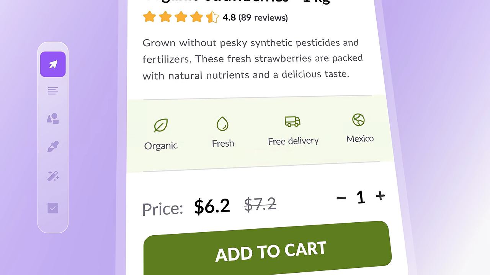
실수 11 — 구분선
원래 구분선은 아주 진하고 두꺼웠어요. 구분선은 섹션을 나누려고 있는 건데, 이렇게 강하면 페이지가 하나의 흐름이 아니라 딱딱한 덩어리 여러 개로 쪼개져 보여요. 위 화면처럼 연하게 바꾸면 깔끔하고 차분해져요. 발표자는 이런 작은 디테일이 인터페이스를 고급스럽게 만든다고 말해요.
실수 12 — 간격 균형
몇몇 섹션 사이가 너무 넓었어요. 여백은 중요하지만 엉뚱한 곳에 많으면 레이아웃이 따로 노는 느낌이 들어요. 간격을 살짝 좁힌 결과가 아래 화면이에요. 제목, 별점, 설명문, 아이콘 줄, 가격이 촘촘하게 이어져 위에서 아래로 한 번에 훑여요.
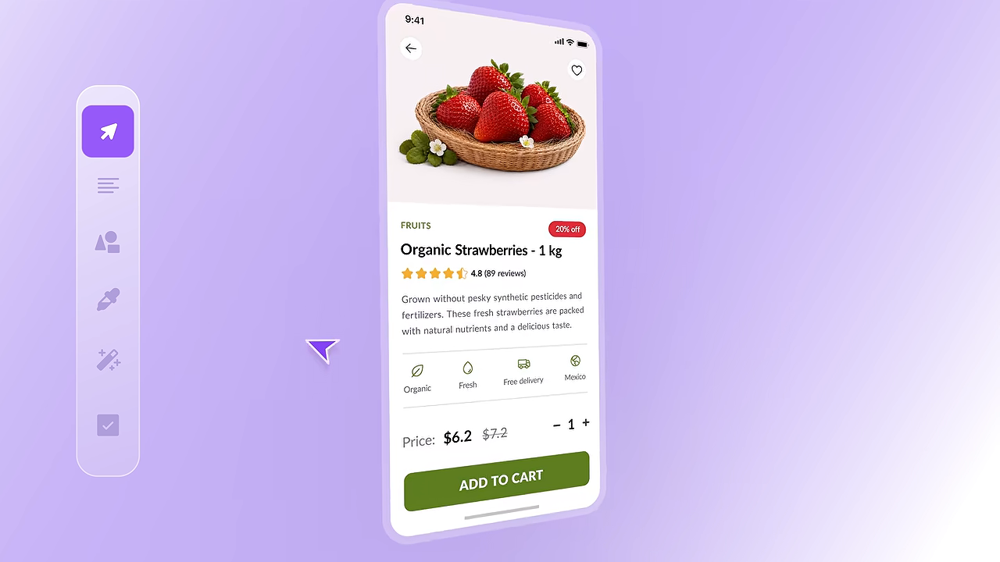
실수 13 — 필요 없는 'Price' 라벨
가격 앞에 'Price:'라는 글자가 붙어 있어요. 통화 기호가 붙은 숫자를 보면 누구나 가격인 줄 알아요. 발표자는 여기서 논리를 하나 더 보태요. 아래 화면처럼 가격에 'price' 라벨을 달았다면 옆의 수량 선택기에도 'quantity' 라벨을 달아야 일관돼요. 둘 다 달면 화면만 복잡해지니 라벨을 아예 지워요.
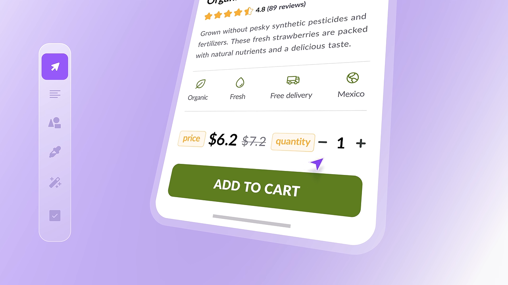
사는 흐름까지 설계하기
마지막 묶음은 생김새가 아니라 '사는 과정'을 다뤄요. 사용자가 무엇을 얼마에 얼마나 사는지를 언제 알게 되는지가 기준이에요.
실수 14 — 제목 속 '1 kg'과 가격 위치
제목이 'Organic Strawberries - 1 kg'이에요. 그런데 사용자는 수량 선택기로 양을 바꿀 수 있어요. 2를 고르면 제목의 1 kg은 틀린 말이 돼요. 아래 화면에서 '1 kg' 자리에 빨간 'problem' 표시가 붙은 이유예요.
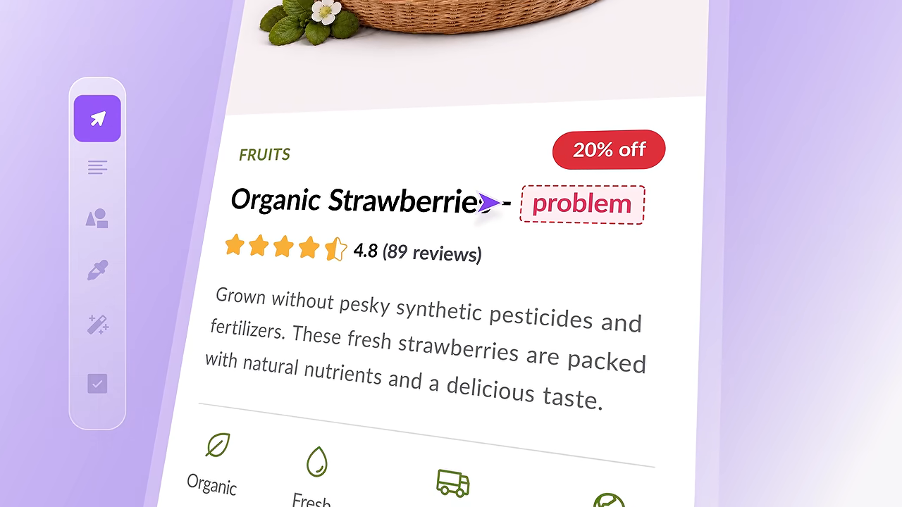
또 하나, 가격이 화면 한참 아래에 있었어요. 발표자는 상품과 대상과 구매 상황에 따라 가격을 다루는 방법은 여러 가지라고 전제하면서, 이 경우엔 가격이 훨씬 먼저 보여야 한다고 해요. 아래 화면에서 가격이 평점 바로 아래로 올라왔어요. '$6.20' 옆에 할인 전 가격 '$7.20'과 단위 'per kg'이 붙었어요.
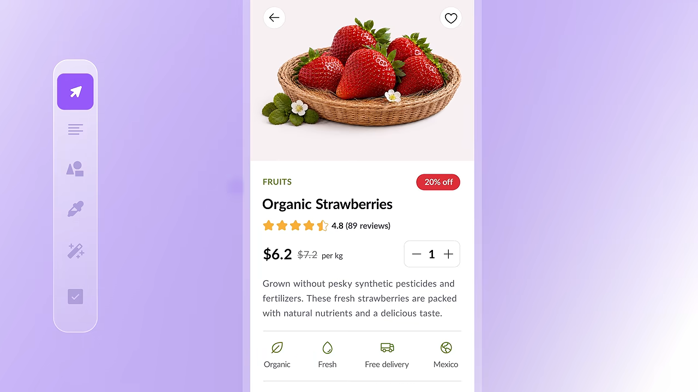
실수 15 — 구매 버튼
장바구니 버튼은 화면에서 가장 중요한 행동이어야 해요. 그런데 원래 'ADD TO CART'는 대문자에 크기도 커서 소리를 지르는 느낌이에요. 그래서 'Add to cart'로 부드럽게 다듬어요.
더 큰 문제는 수량 선택기가 버튼과 멀리 떨어져 있다는 거예요. 사람은 얼마나 살지 고른 다음 장바구니에 담아요. 아래 화면 오른쪽의 'Information Flow' 패널이 이 순서를 보여 줘요. 상품 사진, 카테고리와 할인, 상품명, 평점과 리뷰, 가격, 설명, 특징을 지나 맨 끝의 'Quantity → CTA'에 체크가 되어 있어요. 수량과 버튼이 한 단계로 붙어야 한다는 뜻이에요.
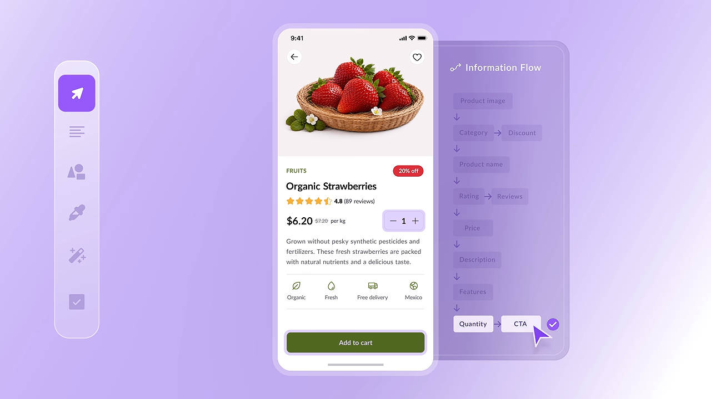
그래서 수량 선택기를 버튼 바로 왼쪽에 붙이고, 선택기 안에 'kg' 단위를 넣고, 버튼 안에 총액을 넣어요. 아래 화면의 '1 kg' 선택기와 'Add to cart · $6.20' 버튼이 그 결과예요. 버튼 위 초록 말풍선에 'removes uncertainty'라고 적혀 있어요. 누르기 전에 낼 돈을 알면 망설일 이유가 하나 줄어요.

한 걸음 더 — 개선 세 가지
발표자는 많은 리디자인이 실수를 고친 데서 멈춘다고 말해요. 좋은 상품 디자인은 망가진 것을 고치는 데서 끝나지 않고 경험 전체를 쉽게 만드는 일이라서, 세 가지를 더해요.
스크롤 카드. 내용 영역을 둥근 모서리와 옅은 그림자가 있는 카드로 바꿔요. 아래 화면에서 흰 카드의 위쪽 모서리가 바구니 사진 아래를 둥글게 덮고 있어요. 스크롤하면 카드가 사진 위로 미끄러져 올라오고, 사진이 더는 주인공이 아닐 즈음 상품 이름이 상단 내비게이션으로 옮겨 가서 스티키로 남아요. 깊이 내려가도 무엇을 보고 있는지 잊지 않아요.
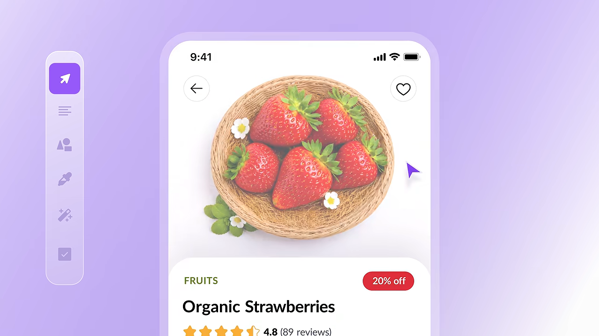
하단 고정 구매 영역. 수량 선택기와 장바구니 버튼이 스크롤해도 화면 맨 아래에 계속 보여요. 사용자는 꼭 맨 위에서 사기로 마음먹지 않아요. 더 읽고, 함께 사는 상품도 보다가, 준비가 됐을 때 바로 누를 수 있어야 해요. 아래 화면에서 'Often bought with' 목록까지 내려왔는데도 맨 아래에 '1 kg'과 'Add to cart · $6.20'이 그대로 있어요.
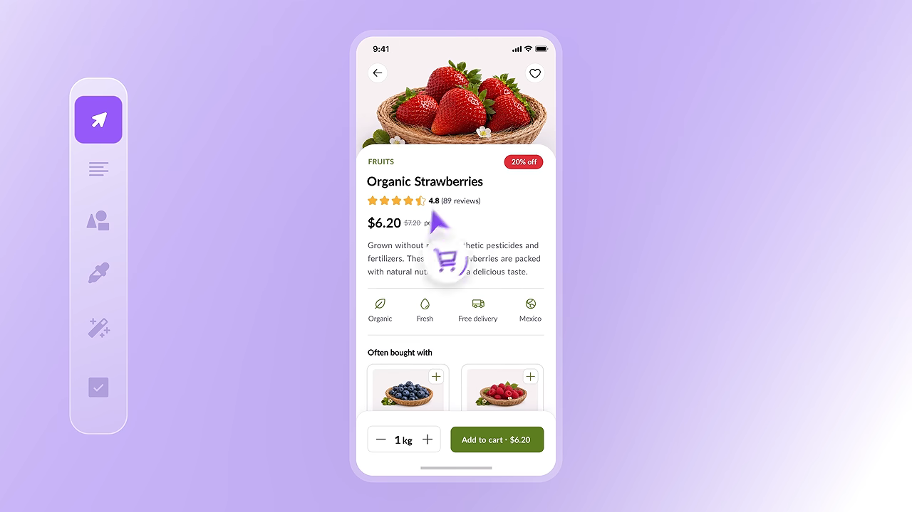
미리 정한 무게 옵션. 수량 버튼을 여러 번 누르는 대신 자주 사는 양을 한 번에 고르게 해요. 아래 화면의 'Choose weight' 줄에 네 칸이 있어요.
| 무게 | 화면의 이름 | 가격 |
|---|---|---|
| 0.5 kg | Snack | $3.10 |
| 1 kg | Regular | $6.20 |
| 2 kg | Family | $12.40 |
| 3 kg | Party | $18.60 |

발표자는 이 옵션을 실제 구매 데이터로 정하라고 해요. 손님 대부분이 1 kg이나 2 kg을 산다면 그 두 개가 가장 고르기 쉬워야 해요. 작은 UX(User Experience) 개선이 매출에 실제로 영향을 주는 대목이라고 말해요.
처음과 끝
아래는 원래 화면(왼쪽)과 새 화면(오른쪽)이에요. 꽉 찬 딸기 사진은 흰 배경 바구니로, 'Organic Strawberries - 1 kg'은 'Organic Strawberries'로, 'Price: $6.2'는 평점 아래 '$6.20 per kg'으로, 형광 'ADD TO CART'는 '3 kg'과 'Add to cart · $18.60'으로 바뀌었어요. 발표자의 결론은 사진이 통일되고, 레이아웃은 예측 가능하고, 정보는 훑기 쉬워졌다는 거예요.
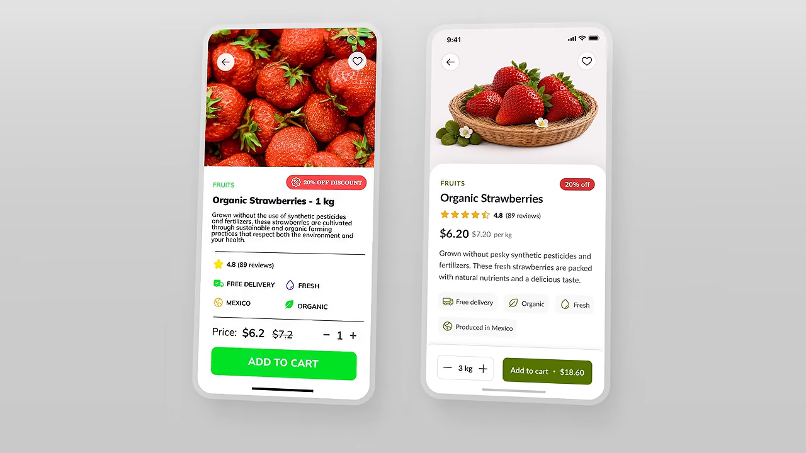